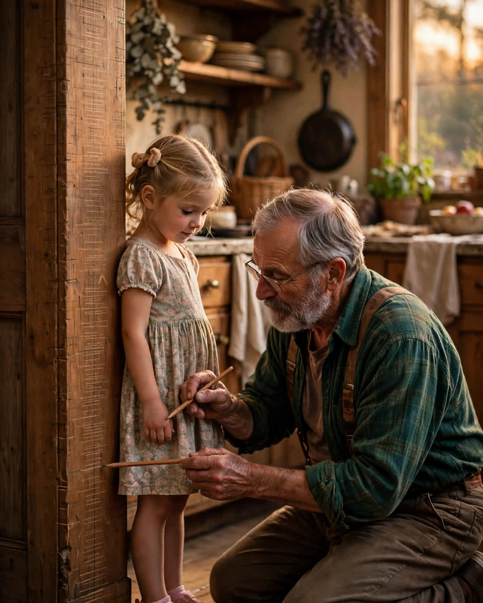

The Doorframe
A Clipp Kaili original story

The doorframe in my father's kitchen has thirty years of our family written on it in pencil, and not one mark of it is mine to erase.
It started the year I turned four. Dad stood me up against the frame of the pantry door, flat-footed, no cheating on tiptoes — he was strict about the tiptoes — and laid a carpenter's pencil across the top of my head like a level. A line. A date. My initials, which he wrote backward because I insisted on doing the J myself.
Every birthday after: same frame, same pencil, same ceremony. The marks climbed. There's a gap for the year I was thirteen and too cool for four seconds of standing still — Dad made the mark anyway, from memory, and wrote "approx." beside it, which is still the funniest and most honest entry in the whole record. There's the year I passed Mom. The year I passed him, when he stepped back and looked up at his own mark from two decades of my being smaller, and said, "Well. That happened fast."
He never painted over it. Mom painted that kitchen three times in thirty years and went around that doorframe like it was a window. House rules. Some walls are just walls. That one was a document.
Then life did what life does. I married, moved across town, had kids of my own in an apartment with a landlord who had opinions about pencil on paint. Dad got older. The house got quieter. And last year, after the fall — nothing broken, everything decided — we did the thing we'd all been gently not discussing. Dad sold the big house. And I bought it.
Not a stranger. Me. The loan officer thought it was sentimental. It wasn't sentiment. It was logistics and love, which in this family have always been the same subject.
Moving day, Dad walked the empty rooms like a captain leaving a ship. I followed behind, carrying his coat, not hurrying him. In the kitchen, he stopped at the pantry door. He took the carpenter's pencil off the top of the frame — it had lived up there for thirty years, waiting between birthdays — and he held it a moment.
"One more," he said.
My daughter is four. She was asleep in the car with her mother, worn out from running circles in her new-empty house. Dad waited. He didn't ask me to hurry. When she woke, we brought her in, and he stood her flat-footed against the frame — no cheating on tiptoes; he was strict about the tiptoes — and laid the pencil across the top of her head, with hands that trembled only a little.
A line. A date. Her initials, first entry, below all of ours.
At the bottom of thirty years of climbing pencil marks, the smallest one. The newest one. Drawn by the same hand that drew the first.
"House changes hands," he told her, though she only understood about half of it. "The frame stays."
Some fathers hand down land, or money, or a name.
Mine handed down a kitchen doorframe and a carpenter's pencil — and thirty years of proof that growing up was something this family did together, one honest line at a time.
This story is a work of fiction, written to touch hearts and bring families closer.
← Back to all stories